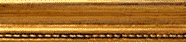
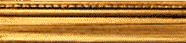
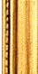
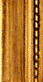
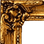

ol-ext
Processing...
ol-ext: Oil painting map
Turn your maps into artistic oil painting!
Oil painting effect based on
Santhosh G_ algorithm.
Javascript implementation by Loktar.
Openlayers ol/source/OilPainting by
JM Viglino on Github.
Image
© IGN-Géoportail
Options